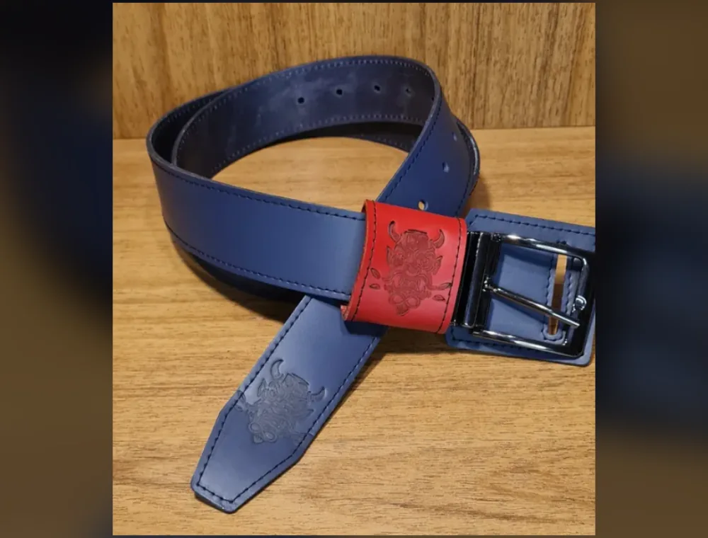
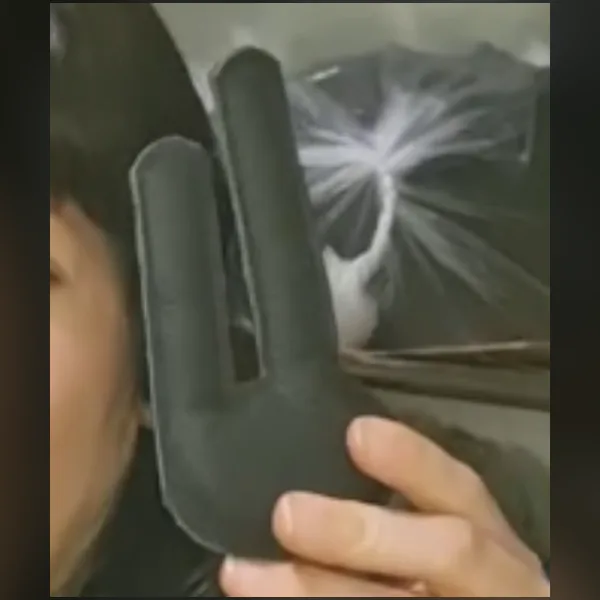
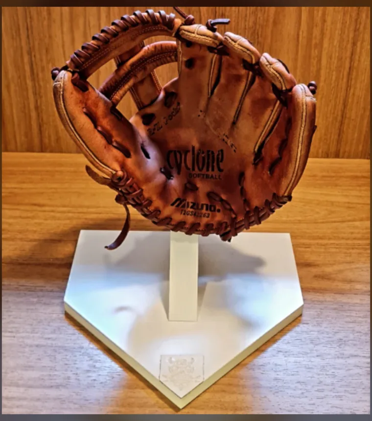
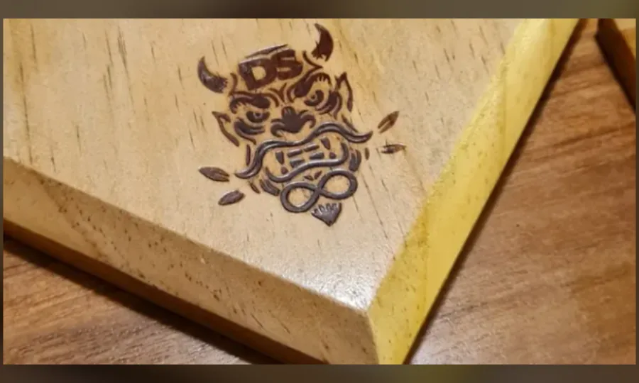

Rawlings 11.75" infield
Couro ressecado e forma perdida depois de anos de uso. Troquei o couro do dedo e do dorso, relacei a luva inteira e recuperei a curva do bolso.
Outros ângulos
8 anos de uso antes de chegar aqui
MANUTENÇÃO DE LUVAS · DESDE 2018 · SÃO PAULO
Cada peça passa pela bancada uma única vez, sem pressa. Couro condicionado, laçamento refeito, forma recuperada — para durar muitas temporadas.
041 · Restauração completa
Couro ressecado e forma perdida depois de anos de uso. Troquei o couro do dedo e do dorso, relacei a luva inteira e recuperei a curva do bolso.
Outros ângulos
8 anos de uso antes de chegar aqui
Couro bom, cor gasta pelo sol. Limpei, hidratei fundo e retingi mantendo o relevo original da luva.
Outros ângulos
Couro original preservado, só a cor foi recuperada
O bolso tinha cedido e não fechava mais. Reforcei a estrutura interna e refiz o laçamento até a forma voltar a segurar a bola.
Outros ângulos
Linha vermelha = forma cedida · linha verde = forma recuperada
Praticamente irrecuperável no couro original. Reconstruí com couro novo, forro e laçamento do zero, mantendo o formato da luva.
Outros ângulos
Reconstrução do zero, na mesma forma
PEDIDO PELO WHATSAPP
O que sobra de couro bom não vira resto: vira cinto, vira lata de creme, vira peça de bancada. Feito na mesma base de corte onde as luvas são abertas.

Couro maciço, gravação do oni em baixo-relevo, passador contrastante e fivela cromada. Cortado no tamanho de quem vai usar.
Lata do ateliê. Hidrata sem pesar o couro.

A OUTRA BANCADA
Quem restaura a luva também faz onde ela vai morar: expositor com cúpula, suporte em forma de home plate, base maciça com berço para as bolas — tudo lixado à mão e marcado a fogo com o oni.

